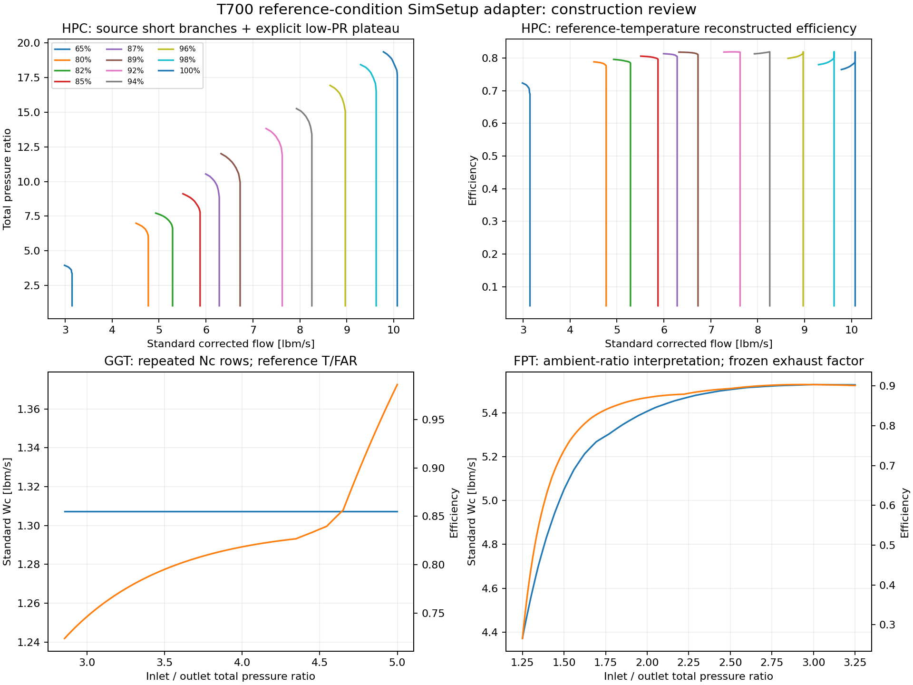

此页为历史数据构建审查。当前唯一T700初始化入口是 T700_initialize；模型由用户手动修改。旧阶段脚本已封存。当前文件组织见 当前说明。
2026-10-29 · 从公开参考函数构建普通 T-MATS 参数 · 原始数据与两个原模型已核对 SHA-256，14 个文件均未改变。
| 层 | 位置 | 职责 | 当前证据 |
|---|---|---|---|
| 原始来源 | sources / data_raw | 保留文献、数字化点及原图 | 11条压气机曲线66点；A2–A11共106点 |
| 参数重建 | data_processed | 定义换算、热力学与参考工况适配 | 数组范围、回插误差、敏感性审查 |
| 参数加载 | model/SimSetup_T700 | setup函数与统一MWS入口 | 已生成；MAT回读和静态语法检查通过；MATLAB入口待执行 |
| 模型执行 | model/T700_*SS_adapter.m | 生成副本、接入引气冷却、求解并记录证据 | 脚本已生成，尚未运行 |
原 SimSetup 与原模型回调继续保留。新入口是 T700_initialize；T700_prepare_SS_adapter 生成单独的 T700_SS_T700Adapter。
| 部件 | Wc/Eff维数 | 效率范围 | 数据性质 |
|---|---|---|---|
| HPC | (11, 21) | 0.04185–0.81889 | 11条源转速线；低压比段近似 |
| HPT | (7, 86) | 0.72399–0.98597 | 重复Nc接口行；参考温度/FAR冻结 |
| FPT | (7, 117) | 0.26566–0.90342 | 重复Nc接口行；参考温度/FAR冻结 |
普通格式：Wc=W√(Tt/518.67)/(Pt/14.695951)，Nc=N/√(Tt/518.67)，NcMap=Nc/s_Nc。流量lbm/s、温度degR、压力psia、转速rpm、扭矩lbf·ft。

引气比例：0.0090750, 0.0208982, 0.0662300；燃烧效率0.9844079，热值18300 Btu/lbm，参考压损比例0.0551680。
这是对安装版本T-MATS部件方程的Python复算，不执行模型文件或MEX，也不等同于Simulink仿真。
Ballin参考边界下收敛，六未知量：7.8932429, 2.0084928, 4.6163721, 2.4807123, 41504.127, 21060.263。
| 残差 | 数值 |
|---|---|
| P49_error | 2.03936e-10 |
| Compressor_flow_error | -2.04682e-13 |
| GGT_flow_error | -7.1994e-10 |
| FPT_flow_error | -4.90576e-10 |
| Ng_dot_rpm_s | 8.75367e-06 |
| Np_dot_rpm_s | 0.000179614 |
检查包括特性图范围。参考源值用于部件适配和初值，适配方程的收敛点不会与原Ballin经验模型每个站位完全一致。
没有使用实验输出调参。误差=(预测−实验)/实验。工况3/5仍作为保留验证数据；这一轮比较没有产生“验证通过”的结论。
| 工况 | 角色 | 数值状态 | Ng | Np | WA2 | P3 | T3 | T45 | T49 |
|---|---|---|---|---|---|---|---|---|---|
| 1 | 低功率边界 | 未收敛 | 未收敛，不生成有效预测误差 | ||||||
| 2 | 计划标定工况，尚未拟合 | 未收敛 | 未收敛，不生成有效预测误差 | ||||||
| 3 | 保留验证工况 | 收敛 | +1.78% | +13.58% | +12.13% | +10.53% | +2.30% | -4.42% | -7.40% |
| 4 | 计划标定工况，尚未拟合 | 收敛 | +1.90% | +12.57% | +11.52% | +10.06% | +2.24% | -4.62% | -7.50% |
| 5 | 保留验证工况 | 收敛 | +1.97% | +13.05% | +10.67% | +9.12% | +2.21% | -3.92% | -8.24% |
| 6 | 计划标定工况，尚未拟合 | 收敛 | +0.95% | +12.22% | +8.21% | +7.79% | +2.35% | -2.59% | -6.56% |
工况1/2的有界求解无进一步下降，分别靠近FPT归一化转速支撑行的下/上边界；这不证明物理上无稳态解。涡轮重复Nc行不能替代真实多转速性能资料。工况3–6虽收敛，Np和流量偏差仍明显。
查看误差CSVcd('E:\postgraduate\09_Turboshaft\06_simulink\example\T700_validation\model')
MWS = T700_initialize;
PlotData('maps');
% 如需Lewis第4工况：
MWS = T700_initialize('lewis',4);
% 模型修改、打开与仿真由用户手动执行。
通过标准：SolverConverged=1，JacFailed=0，前四残差≤1e−6，双轴加速度≤0.05rpm/s，所有图域输入在范围内，质量误差<1e−6 lbm/s。运行入口保存实际日志；达到停止时间本身不表示通过。
当前检测到MATLAB窗口，但computer-use返回“未获准控制MATLAB”。用户已选择手动执行生成的入口，因此上述MATLAB运行结果仍待收集。
完整说明、后续步骤和验收标准 · 交付状态与保护文件哈希 · 构建审查 · 复算原始结果